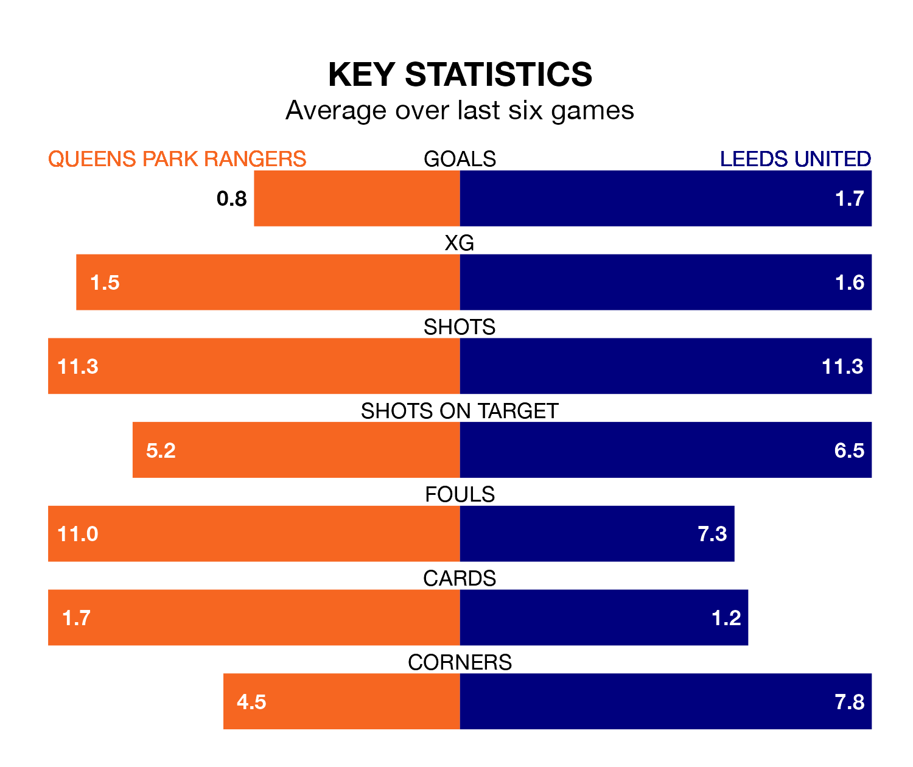

Leeds United are strong favourites to take all three points despite Queens Park Rangers's home advantage in Friday's late match at Loftus Road.
*Betting Company* are offering odds of 1.53 on Leeds sealing the win, with the visitors sitting second in EFL Championship table.
QPR, who are 17th in the league and 40 points behind Leeds, are priced at 4.85 to win. A draw is set at 3.98.
With 80 goals in 44 games so far this season, Leeds are scoring more than average in the league with 1.8 goals per game. And they are conceding fewer than average, letting in 37 goals at a rate of 0.8 per game.
QPR, meanwhile, are below average scorers, with 0.9 goals per game, compared to a league average of 1.3. They have conceded 1.3 goals per game.
With Illan Meslier between the sticks, United can rely on one of the league's safest pair of hands. He has kept 18 clean sheets in his 42 appearances this season, and no 'keeper has prevented the opposition scoring more often in EFL Championship.
In Rangers's net, Asmir Begović has 12 clean sheets in 44 games. He has conceded a goal every 73 minutes, 60% more often than the 117 minutes between goals for Meslier.
In the last 10 years, QPR and Leeds have played each other on 12 occasions. They won five each, and they drew twice.
On average, QPR scored 0.9 goals and Leeds 1.0 in those matches.
Their last meeting was on October 4, when Leeds won 1-0 at home.
The home side are in mixed form in EFL Championship, with three wins and a draw from their last six games.
With two wins and two draws over that period, the visitors' form is slightly worse – they have taken eight points from 18, compared to QPR's 10.
QPR's last match was on Saturday, a 1-0 win against Preston North End, with Lyndon Dykes getting the goal for QPR.
Leeds beat Middlesbrough 4-3 last time out, on Monday, with Crysencio Summerville (two), Patrick Bamford and Wilfried Gnonto on the scoresheet.
Friday's match will be refereed by Darren Bond, who has taken charge of 11 EFL Championship games so far this season, issuing one red card and booking 44 players. He has awarded four penalties.
He is yet to oversee a match featuring either QPR or Leeds this season.
Updated: 07:59 (UTC), 26/04/24